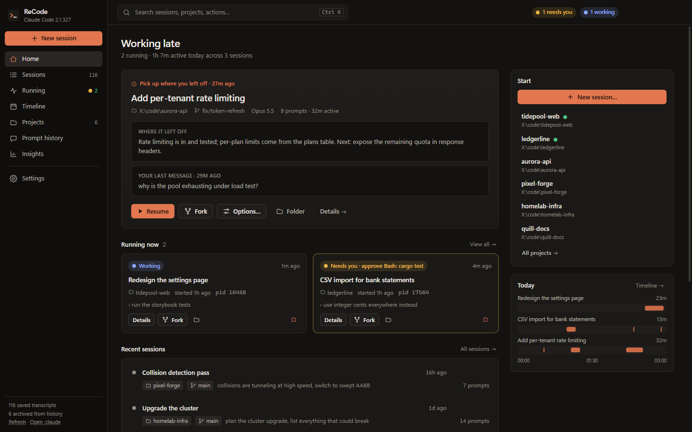
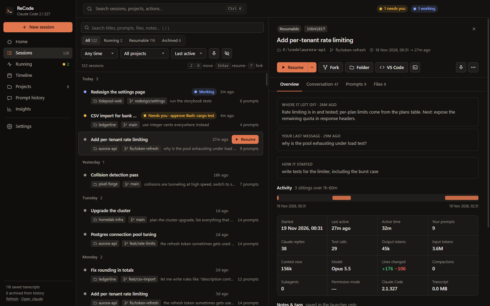
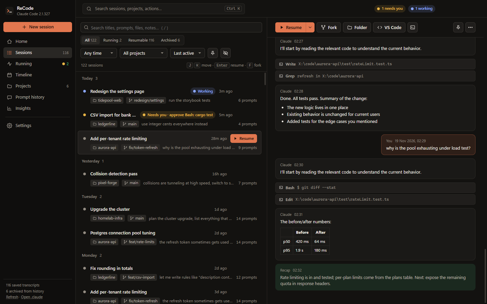
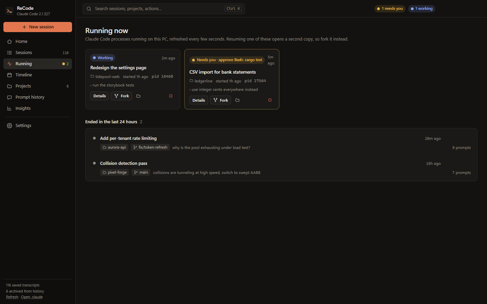
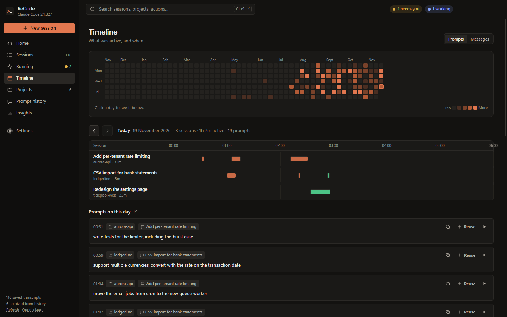
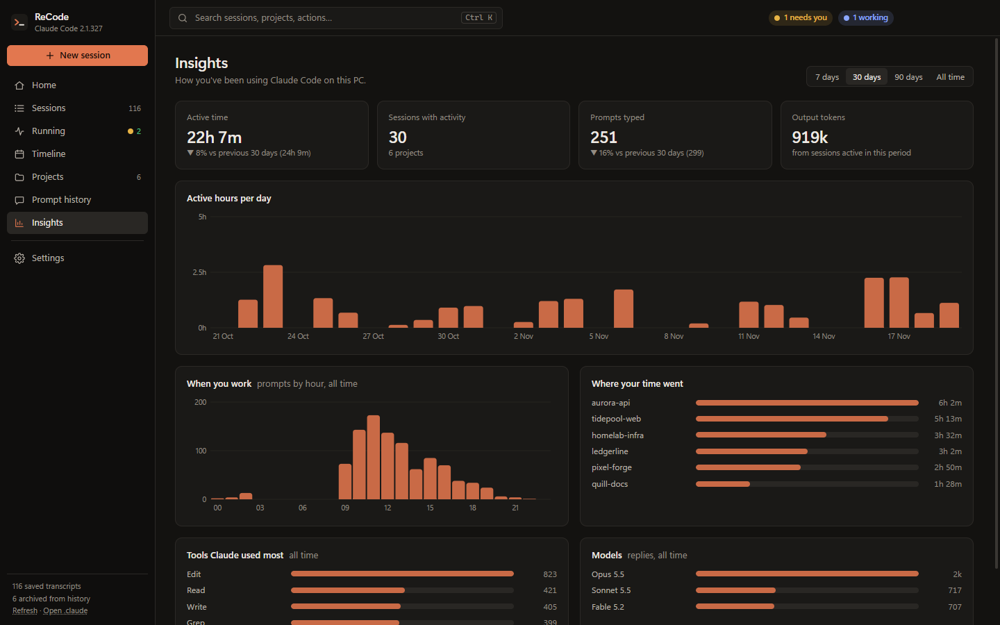
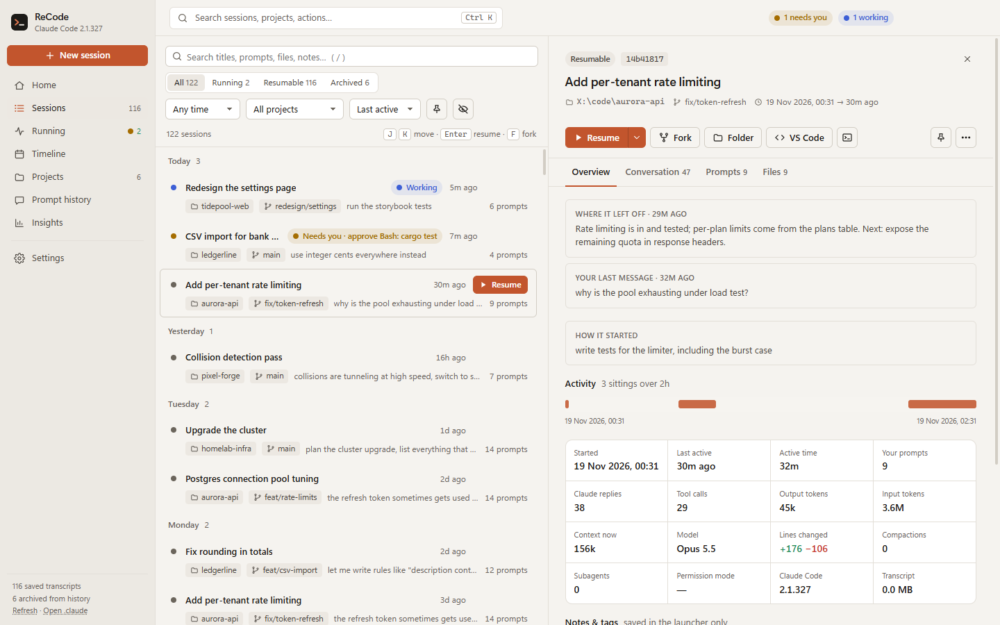

Pick up exactly where you left off.
ReCode finds every Claude Code session on your PC, shows what each one was doing and when, and resumes any of them in a terminal with one click.

Every session, with the context to choose.
Sessions are grouped by day and searchable across titles, prompts, edited files and your own notes. Pick one and see Claude's recap of where it left off, your last message, and how it started.
- Active time, prompts, tool calls, tokens, model and lines changed
- Pin, rename, tag and annotate sessions; hide the noise
- Resume, fork, or open with a different model, permission mode or effort

Read back before you jump in.
The full conversation renders inside the app, with every tool call, its result, compactions and recaps, so you can find the moment that matters before resuming.

Know which session needs you.
Live Claude Code processes are listed with their state, refreshed every few seconds. When one is waiting on a permission prompt, it says so — and what for.

What was active, and when.
A year of activity at a glance, then any single day laid out session by session, with the prompts you typed that day. Reuse any prompt in a new session.

Where your time actually went.
Active hours per day, when in the day you work, time per project, and the tools and models Claude used — over 7 days, 30, 90 or all time.

Fits in next to your terminal.
Follows your Windows theme, or pick one. The title bar matches.

Reads what Claude Code already keeps.
No account, no server, no telemetry. ReCode indexes the files Claude Code writes to %USERPROFILE%\.claude and never modifies them.
Indexed incrementally
Transcripts are read once, then only new lines. Hundreds of sessions and gigabytes of history load in under a second.
Resumes in a real terminal
Opens a Windows Terminal tab (or a PowerShell window) in the session's folder and runs claude --resume with your arguments passed through exactly.
Yours, locally
Pins, notes, tags and presets live in the app's own folder. Sessions whose transcripts were cleaned up still show from your prompt history.
Build it in a minute.
ReCode is an Electron app with no build step for the UI. Clone it, install, and package a standalone ReCode.exe with Start menu and Desktop shortcuts.
claude) on PATH, or its path set in Settings
> git clone https://github.com/nebula3141/recode > cd recode > npm install > npm start # run from source > npm run package # build dist\ReCode-win32-x64\ReCode.exe > npm run shortcuts # Start menu + Desktop shortcuts